R
is to boil or filter the water used for drinking or for preparing foods. This is especially
E important for babies. Babies’ bottles and eating utensils should also be boiled. If
E regular boiling of bottles is not possible, it is
N
safer to use a cup and water spoon. Washing hands with soap and water after a bowel
T
movement (shitting) and before eating or handling foods is also important.
O
N
T
R
E
A common cause of death in children with diarrhea is severe dehydration, or loss of
A too much water from the body (see p. 151).
T
By giving a child with diarrhea plenty of water (best with sugar or cereal and salt),
E dehydration can often be prevented or corrected (see Rehydration Drink, p. 152).
N
T
Giving lots of liquids to a child with diarrhea is more important than any medicine. In fact, if enough liquid is given, no medicine is usually needed in the treatment of diarrhea.
On the next 2 pages are a number of other situations in which it is often more important to use water correctly than to use medicines.


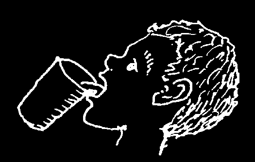

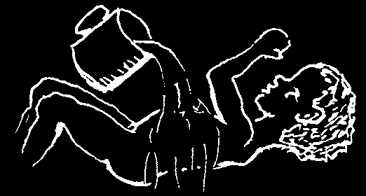
Times When the Right Use of Water
May Do More Good than Medicines
PREVENTION
to help prevent use water see page
1. diarrhea, worms, boil or filter drinking gut infections water, wash hands, etc.
2. skin infections bathe often
3. wounds becoming wash wounds well
84, 89 infected; tetanus with soap and clean water
TREATMENT
to treat use water see page
1. diarrhea, drink plenty of liquids dehydration
2. illnesses with fever drink plenty of liquids
3. high fever remove clothing and soak body with water
4. minor urinary drink plenty of water infections
(common in women)
5. cough, asthma, drink a lot of water bronchitis, and breathe pneumonia hot water vapors
(to loosen mucus)
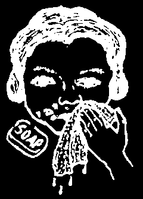
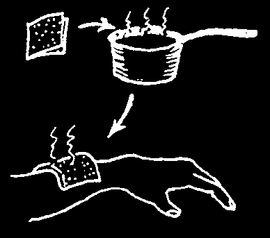


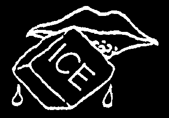
to treat use water see page
6. sores, impetigo, scrub with soap
201, 202, 205, ringworm of skin and clean water
211, 215 or scalp, cradle cap, pimples
7. infected wounds, hot soaks
88, 202 abscesses, boils or compresses
8. stiff, sore muscles hot compresses
102, 173, 174 and joints
9. strains and sprains the first day: soak joint in cold water;
then use hot soaks
10. itching, burning, cold compresses
193,194 or weeping irritations of the skin
11. minor burns hold in cold water at once
12. sore throat or tonsillitis gargle with warm salt water
13. acid, lye, dirt, or flood eye with irritating substance cool water at once, in eye and continue for
30 minutes
14. stuffed up nose sniff salt water
15. constipation, drink lots of water
15, 126 hard stools
(also, enemas are safer than laxatives, but do not overuse)
16. cold sores or hold ice on blister for 232 fever blisters several minutes at first sign
In each of the above cases (except pneumonia) when water is used correctly, often medicines are not needed. In this book you will find many suggestions for ways of healing without need for medicine. Use medicines only when absolutely necessary.
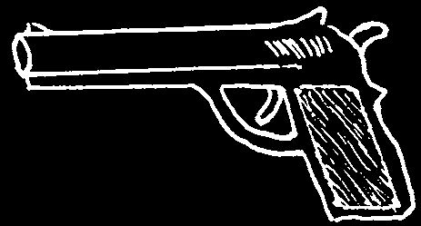
CHAPTER
Right and Wrong Uses of Modern Medicines
Some medicines sold in pharmacies or village stores can be very useful. But many are of no value. Of the 60,000 medicines sold in most countries, the World
Health Organization says that only about 200 are necessary.
Also, people sometimes use the best medicines in the wrong way, so that they do more harm than good. To be helpful, medicine must be used correctly.
Many people, including most doctors and health workers, prescribe far more medicines than are needed—and by so doing cause much needless sickness and death.
There is some danger in the use of any medicine.
Some medicines are much more dangerous than others. Unfortunately, people sometimes use very dangerous medicines for mild sicknesses. (I have seen a baby die because his parents gave him a dangerous medicine, chloramphenicol, for a cold.) Never use a dangerous medicine for a mild illness.
remember: MEDICINES CAN KILL
Guidelines for the use of medicine:
1. Use medicines only when necessary.
2. Know the correct use and precautions for any medicine you use (see the
GREEN PAGES).
3. Be sure to use the right dose.
4. If the medicine does not help, or causes problems, stop using it.
5. When in doubt, seek the advice of a health worker.
Note: Some health workers and many doctors give medicines when none is needed, often because they think patients expect medicine and will not be satisfied until they get some. Tell your doctor or health worker you only want medicine if it is definitely needed. This will save you money and be safer for your health.
Only use a medicine when you are sure it is needed and when you are sure how to use it.
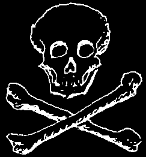

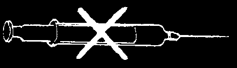
THE MOST DANGEROUS MISUSE OF MEDICINE
Here is a list of the most common and dangerous errors people make in using modern medicines. The improper use of the following medicines causes many deaths each year. BE CAREFUL!
1. Chloramphenicol (Chloromycetin) (p. 356)
The popular use of this medicine for simple diarrhea and other mild sicknesses is extremely unfortunate, because it is so risky. Use chloramphenicol only for very severe illnesses, like typhoid (see p. 188). Never give it to babies younger than 1 month old.
2. Oxytocin (Pitocin), Ergonovine (Ergotrate), and Misoprostol
(Cytotec) (p. 390-391)
Unfortunately, some midwives use these medicines to speed up childbirth or 'give strength’ to the mother in labor. This practice is very dangerous. It can kill the mother or the child. Use these medicines only to control bleeding after the child is born (see p. 266).
3. Injections of any medicine
The common belief that injections are usually better than medicine taken by mouth is not true. Many times medicines taken by mouth work as well as or better than injections. Also, most medicine is more dangerous injected than when taken by mouth. Injections given to a child who has a mild polio infection (with only signs of a cold) can lead to paralysis
(see p. 74). Use of injections should be very limited (read
Chapter 9 carefully).
4. Penicillin (p. 350)
Penicillin works only against certain types of infections. Use of penicillin for sprains, bruises, or any pain or fever is a great mistake. As a general rule, injuries that do not break the skin, even if they make large bruises, have no danger of infection; they do not need to be treated with penicillin or any other antibiotic. Neither penicillin nor other antibiotics helps colds (see p. 163).
Penicillin is dangerous for some people. Before using it, know its risks and the precautions you must take—see pages 70 and 351.
5. Gentamicin (Garamycin) and Kanamycin (p. 358)
Too much use of these antibiotics for babies has caused permanent hearing loss
(deafness) in millions of babies. Give to babies only for life-threatening infections. For many infections of the newborn, ampicillin works as well and is much less dangerous.
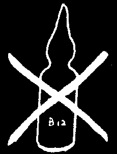
6. Anti-diarrhea medicines with hydroxyquinolines (Clioquinol, di-iodohydroxyquinoline, halquinol, broxyquinoline: Diodoquin, Enteroquinol,
Amicline, Quogyl, and many other brand names) (p. 369)
In the past clioquinols were widely used to treat diarrhea. These dangerous medicines are now prohibited in many countries—but in others are still sold. They can cause permanent paralysis, blindness, and even death. For treatment of diarrhea, see Chapter 13.
7. Cortisone and cortico-steroids (Prednisolone, dexamethasone, and others)
These are powerful anti-inflammatory drugs that are needed for severe attacks of asthma, arthritis, or severe allergic reactions. But in many countries, steroids are prescribed for minor aches and pains because they often give quick results. This is a big mistake. Steroids cause serious or dangerous side effects—especially if used in high doses or for more than a few days. They lower a person’s defenses against infection. They can make tuberculosis much worse, cause bleeding of stomach ulcers, and make bones so weak that they break easily.
8. Anabolic steroids (Nandrolone decanoate, Durabolin, Deca-Durabolin, Orabolin;
stanozolol, Cetabon; oxymetholone, Anapolon; ethylestrenol, Organaboral. There are many other brand names.)
Anabolic steroids are made from male hormones and are mistakenly used in tonics to help children gain weight and grow. At first the child may grow faster, but he will stop growing sooner and end up shorter than he would have if he had not taken the medicine. Anabolic steroids cause very dangerous side effects. Girls grow hair on their faces like boys, which does not go away, even when the child stops taking the medicine. Do not give growth tonics to children. Instead, to help your child grow, use the money to buy food.
9. Arthritis medicines (Butazones: oxyphenbutazone, Amidozone; and phenylbutazone, Butazolidin)
These medicines for joint pain (arthritis) can cause a dangerous, sometimes deadly, blood disease (agranulocytosis). They can also damage the stomach, liver, and kidneys. Do not use these dangerous medicines. For arthritis, aspirin
(p. 378) or ibuprofen (p. 379) is much safer and cheaper. For pain and fever only, acetaminophen (p. 379) can be used.
10. Vitamin B, liver extract, and iron injections (p. 392)
Vitamin B and liver extract do not help anemia or 'weakness’ except in rare cases. Also, they have certain risks when injected. They should only be used when a specialist has prescribed them after testing the blood. Also, avoid injectable iron, such as Inferon. To combat anemia, iron pills are safer and work as well (see p. 124).

11. Other vitamins (p. 391)
As a general rule, DO NOT INJECT VITAMINS. Injections are more dangerous, more expensive, and usually no more effective than pills.
Unfortunately, many people waste their money on syrups, tonics, and 'elixirs’
that contain vitamins. Many lack the most important vitamins (see p. 118). But even when they contain them, it is wiser to buy more and better food. Body-building and protective foods like beans, eggs, meat, fruit, vegetables, and whole grains are rich in vitamins and other nutrients (see p. 111). Giving a thin, weak person good food more often will usually help him far more than giving him vitamin and mineral supplements.
A person who eats well does not need extra vitamins.
THE BEST WAY TO GET VITAMINS:
For more information about vitamins, when they are necessary, and the foods that have them, read Chapter 11, especially pages 111 and 118.
12. Combination medicines
Sometimes, 2 or more medicines are combined in the same pill or tonic. Usually they are less effective, and more expensive, when prepared this way. Sometimes they do more harm than good. If someone wants to prescribe combination medicines, ask him or her to prescribe only the medicine that is really necessary. Do not waste your money on unnecessary medicines.
Some medicines for HIV come in combination pills (see p. 397). This makes them easier to take.
Some common combination medicines that should be avoided are:
• cough medicines which contain medicines both to suppress a cough and also to get rid of mucus. (Cough medicines are almost always useless and a waste of money, whether or not they combine medicines.)
• antibiotics combined with anti-diarrhea medicine
• antacids to treat stomach ulcers together with medicine to prevent stomach cramps
• 2 or more pain medicines (aspirin with acetaminophen—sometimes also with caffeine)


13. Calcium
Injecting calcium into a vein can be extremely dangerous. It can quickly kill someone if not injected very slowly. Injecting calcium into the buttocks sometimes causes very serious abscesses or infections.
Never inject calcium without first seeking medical advice!
Note: In Mexico and other countries where people eat a lot of corn tortillas or other foods prepared with lime (“cal”, not the fruit), it is foolish to use calcium injections or tonics (as is often done to 'give strength’ or 'help children grow’). The body gets all the calcium it needs from the lime.
14. 'Feeding’ through the veins (Intravenous or 'I.V.’ solutions)
In some areas, persons who are anemic or very weak spend their last penny to have a liter of I.V. solution put into their veins. They believe that this will make them stronger or their blood richer. But they are wrong! Intravenous solution is nothing more than pure water with some salt or sugar in it. It gives less energy than a large candy bar and makes the blood thinner, not richer. It does not help anemia or make the weak person stronger.
Also when a person who is not well trained puts the I.V. solution into a vein, there is danger of an infection entering the blood. This can kill the sick person.
Intravenous solution should be used only when a person can take nothing by mouth, or when she is badly dehydrated (see p. 151).
If the sick person can swallow, give her a liter of water with sugar (or cereal)
and salt (see Rehydration Drink, p. 152). It will do as much for her as injecting a liter of I.V. solution. For people who are able to eat, nutritious foods do more to strengthen them than any type of I.V. fluid.
If a sick person is able to swallow and keep down liquids...
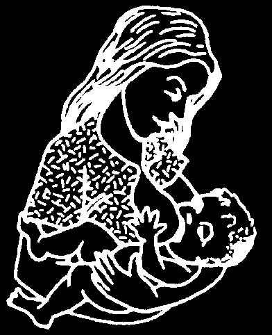


WHEN SHOULD MEDICINE NOT BE TAKEN?
Many people have beliefs about things they should not do or eat when taking medicines. For this reason they may stop taking a medicine they need. In truth, no medicine causes harm just because it is taken with certain foods—whether pork, chili pepper, guava, oranges, or any other food. But foods with lots of grease or spices can make problems of the stomach or gut worse—whether or not any medicine is being taken (see p. 128). Certain medicines will cause bad reactions if a person drinks alcohol (see metronidazole, p. 368).
There are situations when, without a doubt, it is best not to use certain medicines:
1. Pregnant women or women who are breastfeeding should avoid all medicines that are not absolutely necessary.
(However, they can take limited amounts of vitamins or iron pills without danger. Also, pregnant or breastfeeding women with HIV should take medicines to prevent spreading HIV to the baby, see p. 398.)
2. With newborn children, be very careful when using medicines. Whenever possible look for medical help before giving them any type of medicine. Be sure not to give too much.
3. A person who has ever had any sort of allergic reaction— hives, itching, etc.—after taking penicillin, ampicillin, a sulfonamide, or other medicines, should never use that medicine again for the rest of his life because it would be dangerous (see Dangerous reactions from injections of certain medicines, p. 70).
4. Persons who have stomach ulcers or heartburn should avoid medicines that contain aspirin. Most painkillers, and all steroids (see p. 51) make ulcers and acid indigestion worse. One painkiller that does not irritate the stomach is acetaminophen (paracetamol, see p. 379).
5. There are some medicines that are harmful or dangerous to take when you have a specific illness. For example, persons with hepatitis should not be treated with certain antibiotics or other strong medicines, because their liver is damaged, and the medicines are more likely to poison the body (see p. 172).
6. Persons who are dehydrated or have disease of the kidneys should be especially careful with medicines they take. Do not give more than one does of a medicine that could poison the body unless (or until) the person is urinating normally. For example, if a child has high fever and is dehydrated (see p. 76), do not give him more than one dose of acetaminophen or aspirin until he begins to urinate. Never give sulfa to a person who is dehydrated.
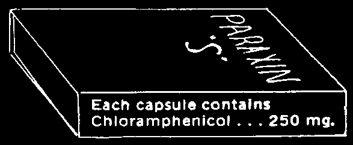
CHAPTER
Antibiotics: What They Are and How to Use Them
When used correctly, antibiotics are extremely useful and important medicines.
They fight certain infections and diseases caused by bacteria. Well-known antibiotics are penicillin, tetracycline, streptomycin, chloramphenicol, and the sulfa drugs, or sulfonamides.
The different antibiotics work in different ways against specific infections.
All antibiotics have dangers in their use, but some are far more dangerous than others. Take great care in choosing and using antibiotics.
There are many kinds of antibiotics, and each kind is sold under several 'brand names’. This can be confusing. However, the most important antibiotics fall into a few major groups:
antibiotic group examples of brand names see
(generic name)
brand names in your area page
(write in)
PENICILLINS
Pen-V-K
AMPICILLINS*
Penbritin
TETRACYCLINES
Terramycin
SULFAS (SULFONAMIDES) Gantrisin
COTRIMOXAZOLE
Bactrim
STREPTOMYCIN, etc.
Ambistryn
353, 361
CHLORAMPHENICOL
Chloromycetin
ERYTHROMYCIN
Erythrocin
CEPHALOSPORINS
Keflex
*Note: Ampicillin is a type of penicillin that kills more kinds of bacteria than do ordinary penicillins.
If you have a brand-name antibiotic and do not know to which group it belongs, read the fine print on the bottle or box. For example, if you have some Paraxin 'S’ but do not know what is in it, read the fine print. It says 'chloramphenicol’.
Look up chloramphenicol in the GREEN PAGES
(p. 356). You will find it must be used only for a few very serious illnesses, like typhoid, and is especially dangerous when given to the newborn.
Never use an antibiotic unless you know to what group it belongs, what diseases it fights, and the precautions you must take to use it safely.
Information on the uses, dosage, risks, and precautions for the antibiotics recommended in this book can be found in the GREEN PAGES. Look for the name of medicine in the alphabetical list at the beginning of those pages.
GUIDELINES FOR THE USE OF ALL ANTIBIOTICS
1. If you do not know exactly how to use the antibiotic and what infections it can be used for, do not use it.
2. Use only an antibiotic that is recommended for the infection you wish to treat.
(Look for the illness in this book.)
3. Know the risks in using the antibiotic and take all the recommended precautions
(see the GREEN PAGES).
4. Use the antibiotic only in the recommended does—no more, no less. The dose depends on the illness and the age or weight of the sick person.
5. Never use injections of antibiotics if taking them by mouth is likely to work as well. Inject only when absolutely necessary.
6. Keep using the antibiotics until the illness is completely cured, or for at least
2 days after the fever and other signs of infection have gone. (Some illnesses, like tuberculosis and leprosy, need to be treated for many months or years after the person feels better. Follow the instructions for each illness.)
7. If the antibiotic causes a skin rash, itching, difficult breathing, or any serious reactions, the person must stop using it and never use it again (see p. 70).
8. Only use antibiotics when the need is great. When antibiotics are used too much they begin not to work as well.
GUIDELINES FOR THE USE OF CERTAIN ANTIBIOTICS
1. Before you inject penicillin or ampicillin, always have ready ampules of Adrenalin
(epinephrine) to control an allergic reaction if one occurs (p. 70).
2. For persons who are allergic to penicillin, use another antibiotic such as erythromycin or a sulfa (see p. 354 and 356).
3. Do not use tetracycline, ampicillin, or another broad-spectrum antibiotic for an illness that can probably be controlled with penicillin or another narrow-spectrum antibiotic (see p. 58). Broad-spectrum antibiotics attack many more kinds of bacteria than narrow-spectrum antibiotics.
4. As a rule, use chloramphenicol only for certain severe or life-threatening illnesses like typhoid. It is a dangerous drug. Never use it for mild illness. And never give it to newborn children (except perhaps for whooping cough, p. 313).
5. Never inject tetracycline or chloramphenicol. They are safer, less painful, and do as much or more good when taken by mouth.
6. Do not give tetracycline to pregnant women or to children under 8 years old. It can damage new teeth and bones (see p. 355).
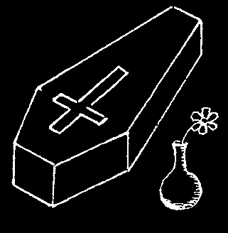
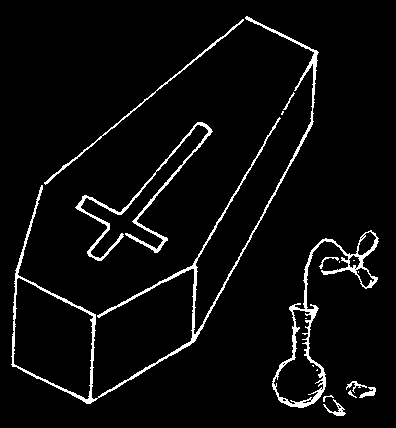
7. As a general rule, use streptomycin, and products that contain it, only for tuberculosis—and always together with other anti–tuberculosis medicines (see p. 361). Streptomycin in combination with penicillin can be used for deep wounds to the gut, appendicitis, and other specific infections when ampicillin is not available
(or is too costly). but should never be used for colds, flu, and common respiratory infections.
8. All medicines in the streptomycin group (including kanamycin and gentamicin)
are quite toxic (poisonous). Too often they are prescribed for mild infections where they may do more harm than good. Use only for certain very serious infections for which these medicines are recommended.
9. Eating yogurt or curdled milk helps to replace necessary bacteria killed by antibiotics like ampicillin and to return the body’s natural balance to normal (see next page).